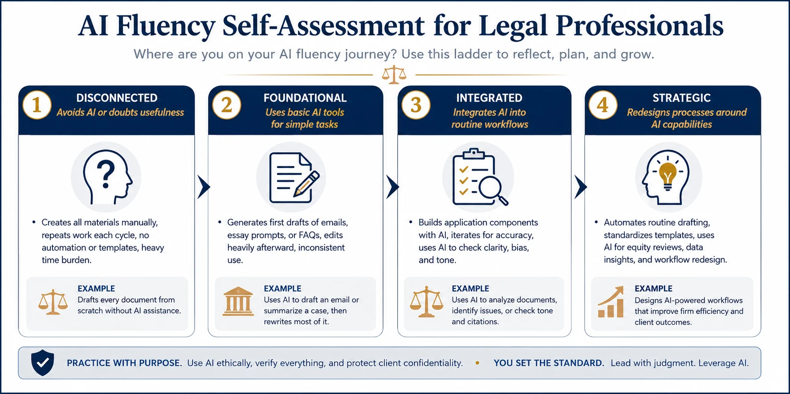

AI fluency is not on or off. It matures in stages — from avoiding the tools, to using them for simple tasks, to weaving them into your workflow, to redesigning your practice around them. Find where you are today, then use the next stage as your map.
Ready to place yourself?
Five quick questions, a color chart, and tailored next steps.
Take the 2-minute self-assessment